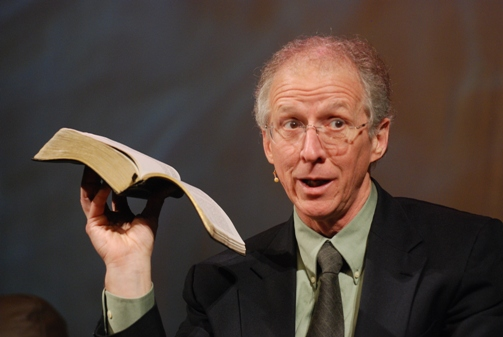

Overly Wealthy Christian Pastors and Why They Are Dangerous
Luke 9:1-3 ESV
Jesus' call to his disciples and proclamation of poverty during ministry:
And [Jesus] called the twelve together and gave them power and authority over all demons and to cure diseases, and he sent them out to proclaim the kingdom of God and to heal. And he said to them, "Take nothing for your journey, no staff, nor bag, nor bread, nor money; and do not have two tunics.
Kenneth Copeland
Richest US pastor and televangelist, prosperity gospel preacher and founder of Kenneth Copeland Ministries
- Net worth: ~$300 million
Kenneth owns a $7 million dollar ranch in Texas with 18,000 square feet and a lakefront view. Believing that God wants Christians to be wealthy, he says God gave him this house and told him, "It's part of your prosperity."
Danger
Multiple times Kenneth has been criticized for his skirting of taxes by using exemptions and private jets to sustain his wealthy tastes. He has claimed to heal COVID during the pandemic and been against the use of vaccines. He has continued to endorse conspiracy theories like the 2020 election fraud.
John Piper

Well known Baptist theologian and pastor, novelist and speaker, might be best known for authoring Don't Waste Your Life
- Net worth: ~17 million
John Piper is a well known face within evangelical circles as both a venerated theologian and authority and as a copious writer and speaker. His books case many bookshelves of Christian America.
Danger
I'm not sure when it surfaced, but it was found that there where reports of sexual and physical assault within the church, and Piper and the governing pastors at his churches covered it up. Their solution? Submit to your husband and trust God. Disgusting.
See here on YouTube:

Greg Locke
Baptist founder and lead pastor of Global Vision Bible Church located in Mount Juliet, TN
- Net worth: ~$129 million
Greg Locke is a frequent visitor to social media where he expresses his disgust of the liberal agenda, gay rights and the media. He sports an aggressive and combative temperament in such ramblings.
Danger
Locke has continued to sway his audience politically, erasing the line between church and state and his church's tax exempt status. He espouses that Democrats and liberals are demon controlled and dangerous to children. He has been anti-COVID by spreading misinformation about masks, spread of the virus, and effectiveness of vaccines. He was a part of the January 6 attack against the US Capital.
T. D. Jakes
American bishop, author and head of the church, The Potter's House, in Dallas, Texas
- Net worth: ~$20 million
His books, sermons and broadcasts are well circulated. He is associated with the Pentecostal movement.
Danger
Misogynistic and patriarchal, Jakes feeds into the notion that women are somehow a second class citizen and should stay in their role as help-meets to men. Such teaching devalues humanity and feeds into the cycle of toxic masculinity.
Joel Osteen
Televangelist, author, speaker and pastor out of Houston, Texas
- Net worth: ~$100 million
Known for his winsome and charming nature, Joel Osteen is a prosperity gospel preacher who continues to benefit of his congregation and adherents without supporting them along the way.
Danger
What showed the true colors of this pastor and his prosperity gospel revolved around Hurricane Harvey in August of 2017, when affected victims of the hurricane were not able to use Lakewood Church – a mega seater arena of a church – as an emergency shelter. Osteen is profiteering from his very religion.